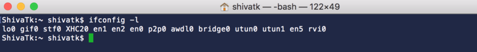

There are two approaches to analyzing an iOS device's network traffic. The first approach is called Eavesdropping or Sniffing where we listen on the device's network interface to look at incoming and outgoing packets. Using this approach, all packets like TCP, SSL/TLS, ARP, DNS etc.. can be captured by using tcpdump.
The second approach is called a 'Man In The Middle' attack where we setup an outbound proxy for the device. This proxy will have Charles, Fiddler or another tool installed to inspect traffic traversing through it. This method will, however, only allow us to inspect HTTP/HTTPS traffic.
tcpdump
You would need a Mac to plug the iOS device to and create a virtual interface using rvictl. Then tcpdump can be used to save packets traversing through that interface.
1. Using a lightning cable, connect the iOS device to the Mac via the USB port.
2. Accept the prompt for trusting the Mac on the device.
3. Launch terminal on the Mac and check if rvictl is installed by typing
rvictl -h
4. If you see something like rvictl command not found, you need to install Xcode from the App Store, launch Xcode, accept installation of additional tools and restart Terminal.
5. Once rvictl is installed, create a virtual interface for the iOS device by typing -
rvictl -s `echo $(system_profiler SPUSBDataType | awk '(length($NF) == 40) {print $NF}')`
6. If you see something like - rvictl: option requires an argument -- s, please verify that the USB connection to the device is good and trust is established.
7. Once you get a succeeded message, verify the interface by typing - and checking if rvi0 exists.
ifconfig -l

8. We are now ready to start the capture using tcpdump. Type in terminal -
sudo tcpdump -K -n -s 0 -i rvi0 -w ~/Desktop/iOScapture.pcap
9. Replicate the issue you want to grab traffic for.
10. Then stop the capture - (CTRL + C). You should see the number of packets captured.
11. The capture in your desktop (~/Desktop/iOScapture.pcap) can be viewed using Wireshark.
Charles Proxy
If we want to specifically look at the contents of HTTP/HTTPS traffic, a MITM approach is the way to go. In this method, we install Charles Proxy on a Mac and setup a WiFi proxy on the iOS device to route all traffic through this Mac.
1. Install Charles Proxy on a Mac. Link here.
{% endblock %}